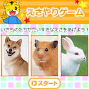

<!-- main -->
<div id="main">

<div id="kyouzai">

<div class="block">
<h3>どれを たべるのかな?はっけんゲーム</h3>

<p>｢つたえあいえほん｣の｢ものの なまえ ずかん｣と同テーマの､「生き物に餌をあげる」ゲームです。３つの選択肢の中から選ぶことで、絵本で取り組んだことを確認できます！</p>
</div><!-- /.block -->

<div class="block">
<p class="play">■遊び方<br />
ボタンもしくは画像をタップして進んでください。</p>
</div><!-- /.block -->

<div class="red_btn"><a href="src/esayari_android.swf"></a></div>

</div><!-- /#kyouzai -->

</div><!-- /#main -->